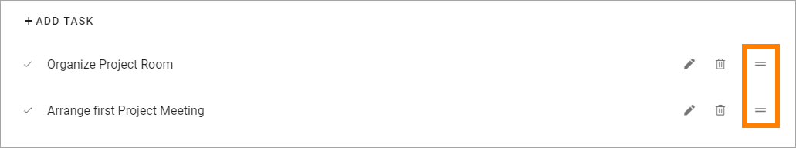

The Tasks tab - authoring processes¶
Here you can create a To Do list for the process or process step.

To add a task, click ADD TASK, type the text and click OK.

To organize the tasks list, click the pen to edit a link or a heading. Click the dust bin to delete it.
To move a task, drag the icon to the far right to the desired position.
To edit a task, click the pen, to delete it, click the dust bin.
Assigning tasks to colleagues¶
In Omnia 6.12 and later, it can be possible to assign tasks to colleagues using Microsoft Planner, if the process is being accessed through Microsoft Teams. A layout for use with Teams must be created for this purpose.